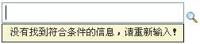
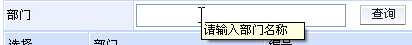
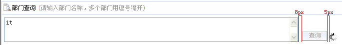

1.1.1 文本框的交互
| 规则编号 | 交互行为 | 交互规范 |
| 【规则1-1-1-1】 | 单击行为 |
1、单击部门单选文本框呈激活状态并获得焦点，可手工输入信息； 2、单击放大镜图标，弹出部门单选LOV窗口，位置为屏幕中央； |
| 【规则1-1-1-2】 | 数据查询 |
1、支持模糊查询（输入部门名称），不区分大小写； 2、如文本框为空时，按放大镜图标，弹出LOV框窗口进行选择； 3、文本框内输入待查询部门信息按放大镜图标, 可查询信息； a) 结果不唯一时，弹出部门单选LOV窗口，文本框内输入的字段带入到弹出窗口的文本输入框内； b) 结果唯一时，查询结果直接返回到文本输入框中； 【建议1-1-1-2-1 】 1、可使用部门的拼音进行查询，不区分大小写； 2、为保证系统性能，用户输入模糊字段应有两个字段以上才能进行数据匹配,则Tips提示，“没有符合条件的信息，请重新输入！” |
| 【规则1-1-1-3】 | 数据删除 |
1、用户可直接对存在于文本框中的数据或字段进行手工删除的操作； 2、用户也可通过点击界面中的【清空】按钮来清空文本框中的数据； |
| 【规则1-1-1-4】 | 信息校验 |
1、当文本框为必填项时： a) 如数据为空，焦点离开该控件时必须进行校验并提示用户填写信息; b) 如输入的数据不完整、错误、没有匹配的信息时，焦点离开该控件时必须校验提示；（请参考当焦点离开文本框的交互规则） 的操作； 2、焦点离开文本框时的交互: a) 用户点击放大镜按钮的行为： ♦ 如用户输入精确数据，则查询到的数据直接返回到文本框中，焦点集中到下一控件中； ♦ 如用户输入模糊字段，则进行数据匹配； ¤ 如没有匹配到数据，在文本框下面出现Tips提示，“没有符合条件的信息，请重新输入！”，并清空文本框中的字段，焦点仍集中到文本框中；如下图所示：  ¤ 如匹配到多条数据，则弹出LOV窗口输入的字段带入到弹出窗口的文本框中，并显示查询到的结果； b) 用户输入模糊字段后，点击界面上其它控件或任意地方： ♦ 如用户输入精确数据，则查询到的数据直接返回到文本框中，焦点集中到下一控件中； ♦ 如用户输入模糊字段，则进行数据匹配； ¤ 如没有匹配到数据，就在文本框下面出现TIPS提示，“没有符合条件的信息，请重新输入！”，并清空文本框中的字段，焦点仍集中到文本框中；（见上图） ¤ 如匹配到多条数据，则弹出提示窗口，“存在多条匹配的数据，是否进行选择？” ⊕ 点击【确定】按钮，弹出LOV窗口输入的字段带入到弹出窗口的文本框中，并显示查询到的结果； ⊕ 点击【取消】按钮，清空文本框中的字段，焦点集中到被点击的控件中； |
| 【规则1-1-1-5】 | 键盘交互 |
1、焦点在文本框时，按ENTER（回车键）执行查询操作 |
1.1.2 LOV弹出窗口的交互
| 规则编号 | 交互行为 | 交互规范 |
| 【规则1-1-2-1】 | 数据查询 |
1、当鼠标移动到文本输入框上显示Tips提示：“请输入姓名/工号”(如下图所示)  2、单击文本输入框为激活状态并获得焦点，可支持模糊查询（输入员工姓名/工号），不区分大小写； 3、文本框内输入待查询部门信息按【查询】键即可查询信息； a) 如结果唯一，查询到的结果直接返回到关联的选择文本框中； b) 如存在多条匹配的数据，则显示匹配出的所有数据； 4、用户进行查询操作后，界面上必须要有明显的反馈并且【查询】按钮为灰不可操作；（如下图所示）
5、查询出的部门信息数据按查询人员所在部门的相关性进行排序； 6、如已选择了部门信息，用户再次点击放大镜按钮，则弹出框窗口中的文本输入框中的信息应为空； 7、部门信息的显示方式应为：二级部门/一级部门，如： IT项目部/架构及流程；如下图所示： 【建议1-3-2-1-1 】 1、建议支持用部门名称的拼音进行查询，不区分大小写； 2、当支持使用部门名称的拼音进行查询时，鼠标移动到文本输入框上显示Tips提示：“请输入部门名称/拼音”（如下图所示） |
| 【规则1-1-2-2】 | 信息校验 |
1、当数据为空，点击查询或确定按钮时提示：“请输入查询条件！” 2、部门选择输入错误、相关信息应出现提示：“没有符合条件的部门信息，请重新输入！” 3、当用户未做任何选择即关闭部门单选LOV弹出窗口，则关联的文本框弹出提示，“存在多条匹配的数据，是否进行选择？” a) 点击【确定】按钮，弹出LOV窗口输入的字段带入到弹出窗口的文本框中，并显示查询到的结果； b) 点击【取消】按钮，清空文本框中的字段，焦点集中到下一控件中； |
| 【规则1-1-2-3】 | 键盘交互 |
1、焦点在文本框时，按ENTER（回车键）执行查询操作 2、TAB键在LOV弹出窗口相关元素中切换的交互 a) 在文本框中输入部门信息后按TAB键焦点切换到【确定】按钮上，按Enter键查询信息， b) 在文本框输入部门信息后按Enter键查询信息，焦点直接跳转到第一行部门信息的【选择】链接文字上， |

1.2.1 多行文本框的交互
| 规则编号 | 交互行为 | 交互规范 |
| 【规则1-2-1-1】 | 单击行为 |
单击多行文本框任意地方和文本框后的放大镜图标，弹出部门多选LOV窗口，位置为屏幕中央； |
| 【规则1-2-1-2】 | 信息校验 |
如数据为空提交,必须进行校验并提示用户选择信息； |
| 【规则1-2-1-3】 | 删除数据 |
1、用户通过单击控件右边的【删除】图标来清空文本框中的数据； 2、用户也可通过点击界面中的【清空】按钮来清空文本框中的数据； |
1.2.2 LOV弹出窗口的交互
| 规则编号 | 交互行为 | 交互规范 |
| 【规则1-2-2-1】 | 数据查询 |
1、单击多行文本输入框为激活状态并获得焦点，支持模糊查询（部门名称），不区分大小写； 2、文本框内输入待查询部门信息，按【查询】按钮即可查询信息； a) 如用户进行模糊查询，则将查询出的数据信息显示在【可选择部门】列表中供用户选择； b) 如用户输入精确的部门信息且是唯一的，则查询到的数据结果返回【已选择部门】列表中； 3、用户进行查询操作后，界面上必须要有明显的反馈并且【查询】按钮为灰不可操作；（如下图所示）  4、查询出的部门信息数据按查询人员所在部门的相关性进行排序； 5、进入部门多选界面【确定】按钮默认为灰不可操作，当数据选择进入【已选择部门】的列表内的时候，才激活确定按钮。 6、双击【可选择部门】列表中的数据可移动到【已选择部门】列表中； 7、鼠标移动到部门信息上,出现TIPS提示,内容为完整的部门信息，被选中的部门数据信息呈现高亮状态； 8、鼠标移动到部门选择列表中的按钮上，出现TIPS提示内容为按钮的功能说明; （如下图所示） 9、部门信息的显示方式应为倒序：二级部门/一级部门，如： IT项目部/架构及流程； ( 例如：张三10053689/IT项目部/架构及流程) |
| 【规则1-2-2-2】 | 提示信息 |
部门多选表头名称后直接文字提示：“请输入部门名称，多个部门用逗号隔开” 【建议1-1-2-2-1】 1、建议支持使用部门名称的拼音进行查询，不区分大小写； 2、当支持部门名称的拼音进行查询时，表头名称后直接文字提示：“请输入部门名称/拼音，多个部门用逗号隔开” （如下图所示） |
| 【规则1-2-2-3】 | 信息校验 |
1、当文本框数据为空，点击【查询】或【确定】按钮时提示：“请输入查询条件！” 2、当可选择部门列表中有数据，已选择部门列表为空，点击【确定】按钮时提示：“请选择部门信息！” 3、部门选择输入错误时应出现提示：“没有符合条件的部门信息，请重新输入！” |
| 【规则1-2-2-4】 | 退出方式 |
1、当【可选择部门】中的信息数据移动到【已选择部门】列表框中且用户点击【确定】按钮，数据返回到关联的多行文本框中，LOV弹出框自动关闭； 2、当用户主动放弃选择，点击框窗口的关闭图标按钮退出界面； |
| 【规则1-2-2-5】 | 键盘交互 |
1、焦点在文本框时，按ENTER（回车键）执行查询操作 2、支持TAB键在相关元素间的切换; 3、支持CTRL+C（复制）、CTRL+V（粘贴）组合键； 4、支持按CTRL或CTRL＋拖拽鼠标可选择、全选人员数据； |